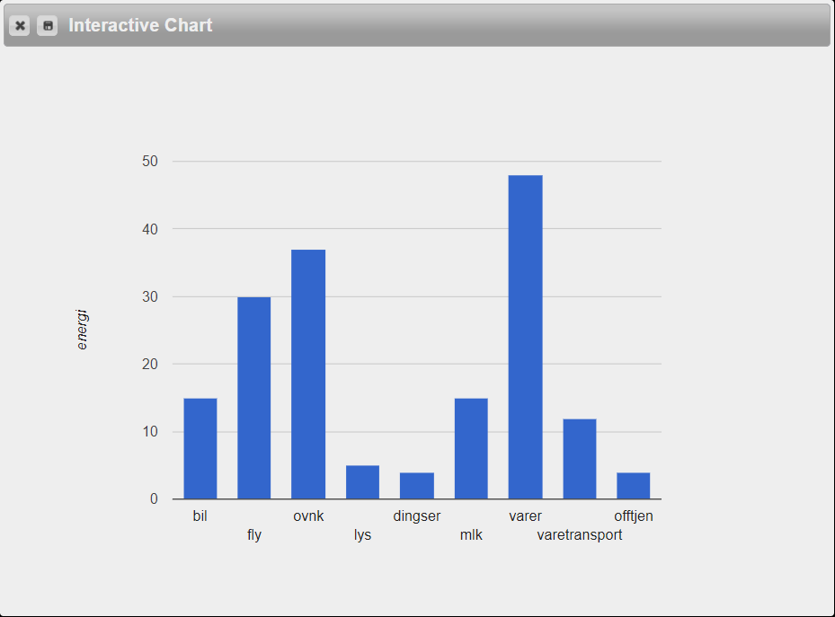

Navn:
Benjamin Thorsen Papp
Beskrivelse:
29 år gammel mann med stor interesse for musikk, klatring og teknologi!
Interesser:
Musikk, Gaming, Trening
Figur i Pyret

Jeg kjører kun bil av og til, så min "bil" ville vært litt mindre enn den som vises